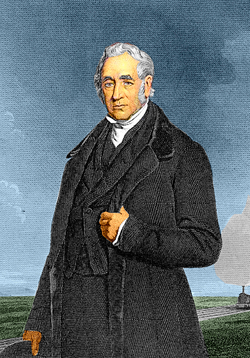
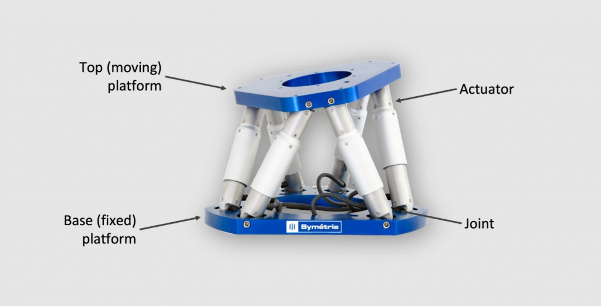
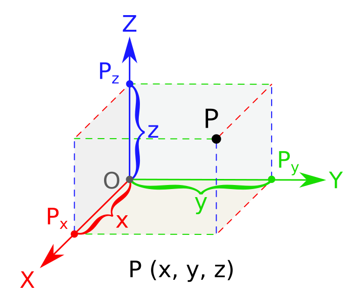
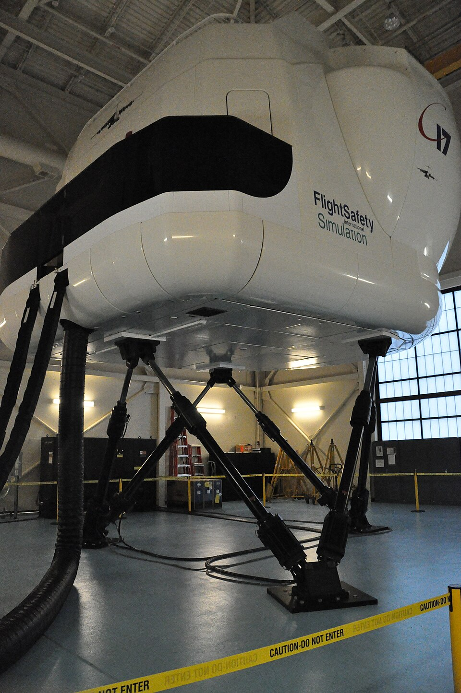

1. What Is It?
It is a parallel manipulator using a closed kinematic structure where multiple actuators support a mobile top base, unlike conventional series robotic arms.

Parallel structure mechanism graphic.
2. Who Made It?
Designed conceptually by V. Eric Gough in 1954 and later publicised by D. Stewart in 1965.

Photo not found , this man is George Stephenson.
3. How Is It Built?
Built with a top and bottom base connected at four corners, pneumatically driven to extend and retract smoothly.

Hexapode from Axion Optics.
4. What Function Does It Serve?
Delivers precise spatial movements along X, Y, and Z axes while maintaining exceptionally high rigidity and stability.

Visual Concept: 3D Coordinate spatial movement vectors placed under the capability description.
5. Key Applications
Widely utilized across motion simulators, precision alignment systems, and platform stabilization.

Visual Concept: Industrial motion base simulator image placed under the application summary.